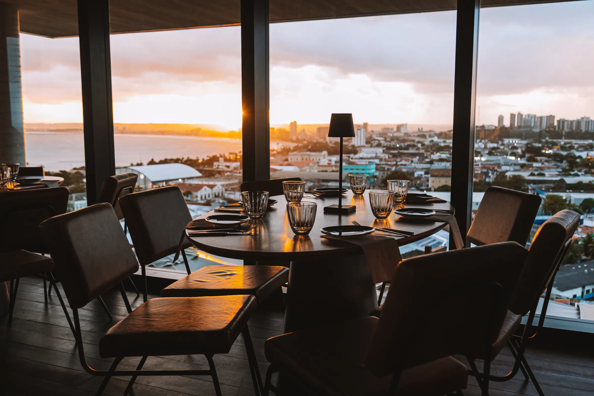
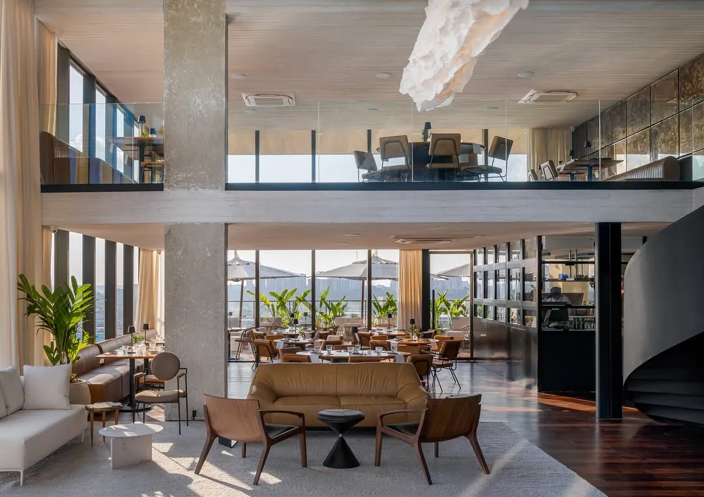
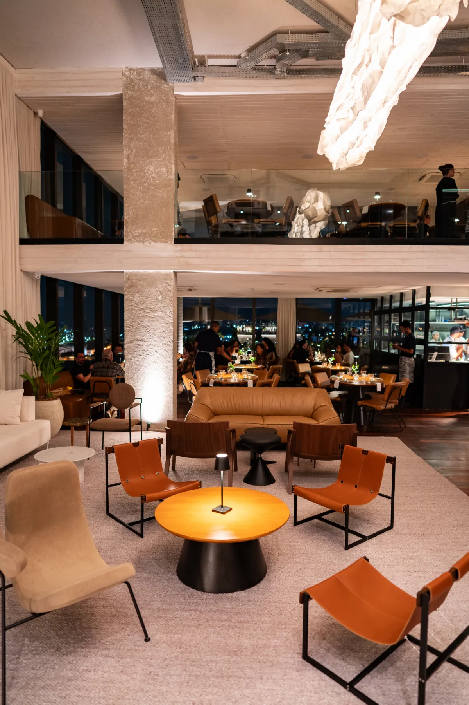
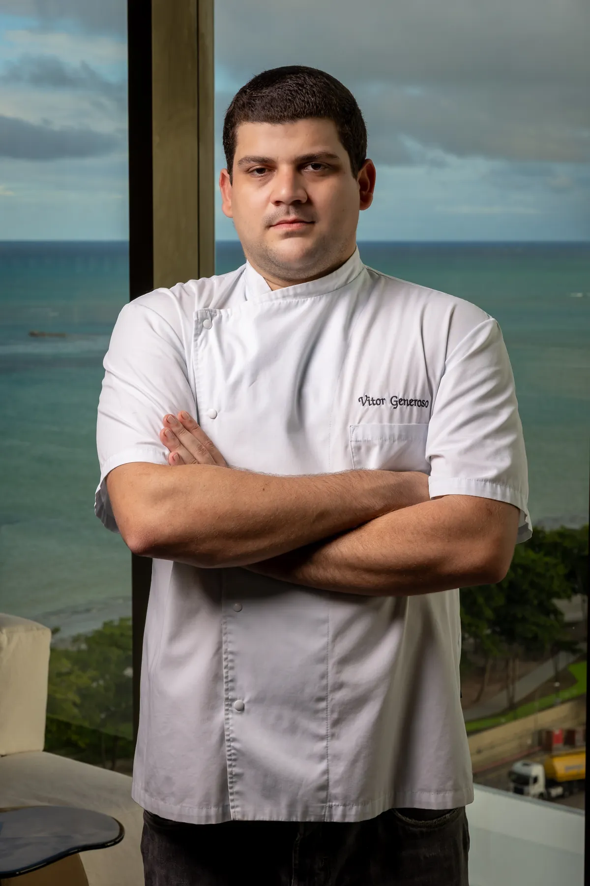
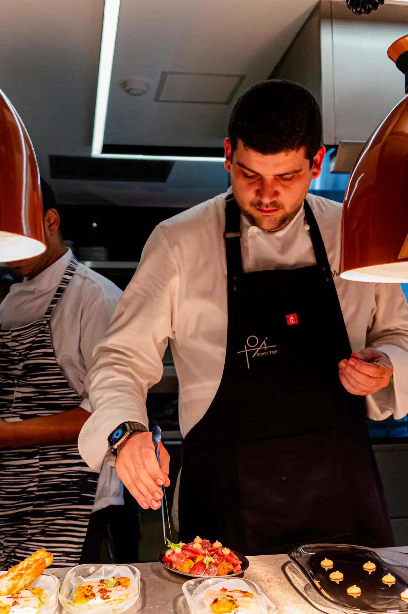

Pajuçara · Maceió
Uma nova perspectiva sobre a gastronomia em Maceió.
daqui do alto eu te espero
01 Conceito The essence of Toá
Entre o céu, o mar e a cidade.
No topo do Edifício New Time, à beira-mar da orla da Pajuçara, nasce o primeiro restaurante em formato rooftop de Alagoas. Mais do que um destino gastronômico, o Toá é um convite a experimentar Maceió sob uma nova perspectiva.

De dia
O almoço com o mar ao fundo.
Sexta a domingo, a partir das 12h

À noite
A cidade se acende lá embaixo.
Terça a quinta até 00h · sexta e sábado até 01h
A história
Aberto ao público em 4 de setembro de 2025, o Toá nasce da união dos grupos Maikai e Divina Gula. A proposta junta gastronomia autoral, arquitetura contemporânea e uma vista panorâmica do mar de Maceió.
É um lugar para viver o dia em três tempos: o almoço com o mar ao fundo, o ritual do pôr do sol e a noite que se acende sobre a cidade.
A arquitetura
O bar, integrado à cozinha-show, é o protagonista do salão. Concreto aparente e madeira natural criam uma atmosfera elegante e autêntica, enquanto os espaços abertos valorizam a iluminação natural e a vista panorâmica.
02 Gastronomia The art of cooking
Gastronomia contemporânea na brasa.
Fogo, técnica e ingredientes brasileiros. Os pratos-assinatura do Toá nascem da brasa e ganham forma através de técnicas e combinações pensadas para despertar os sentidos e transformar o ato de comer em uma experiência memorável.
Pratos-assinatura
-
Foto · Lula na Brasa01
Lula na Brasa
Lulas inteiras na brasa, molho de champagne e alho-poró, vinagrete quente de milho e azeite de coentro.
-
Foto · Cupim02
Cupim
20 horas de cocção, finalizado na brasa com demi-glace, purê de batata e farofa de pão de queijo.
-
Foto · Arroz de pato03
Arroz de pato
Arroz meloso de pato, tutano bovino na brasa, magret de pato e banana-da-terra frita.
-
Foto · Polvo, macaxeira e bacon04
Polvo, macaxeira e bacon
Polvo na brasa glaceado com geleia de bacon e maionese de wasabi.
-
Foto · Atum e melancia05
Atum e melancia Entrada
Atum no carvão, texturas de melancia, chilli oil, ponzu e ovas de tobiko.
Entradas, saladas, pratos do mar e da terra, massas e arrozes, sobremesas, coquetéis e vinhos.


O chef
Vitor Generoso
Filho dos fundadores do tradicional Divina Gula, Vitor voltou a Maceió em 2017 para dividir a cozinha com o pai, o chef André Generoso, depois de uma formação que passou pela França, pelo Peru e por cozinhas de referência no Brasil.
No Toá, assina uma cozinha autoral, técnica e afetiva: memória de família, disciplina francesa e ingredientes brasileiros, com a brasa como linguagem mais marcante.
- Formação
- Institut Paul Bocuse, Lyon
- Estágios
- Domaine de Clairefontaine (1 estrela Michelin) e Malabar, no Peru
- Passagens
- Evvai, D.O.M. e Made
- Hoje
- Divina Gula, Divina Gula Francês, Toá Rooftop, Lontra Beach Club e Pousada Caiuia
04 Ambientes The atmosphere
Um cenário que muda com a luz do dia.
Da cozinha-show, onde o preparo dos pratos faz parte do espetáculo, ao bar e às áreas de convivência: o projeto autoral de Rodrigo Fagá combina materiais naturais, linhas contemporâneas e a paisagem como extensão natural do ambiente.
Ao longo do dia, a luz transforma o espaço. No fim da tarde, o horizonte ganha tons dourados. À noite, a atmosfera se torna mais intimista. Percorra os espaços ou entre direto no tour virtual.
Tour virtual
Visite o Toá em 360º
Explore o salão, o bar e a vista antes de chegar.
05 Eventos The art of celebrating
Para celebrar do alto.
Aniversários, jantares e encontros de empresa com uma vista privilegiada da orla de Maceió. O Toá Rooftop é o cenário perfeito para celebrar. Conte o que você imagina e a equipe do Toá prepara uma proposta.
Sociais
Aniversários, jantares em família e celebrações entre amigos.
Corporativos
Confraternizações, jantares de negócios, lançamentos e encontros de equipe.
- 1 Preencha o pedido ao lado
- 2 Ele segue pronto pelo WhatsApp
- 3 A equipe retorna com a proposta
06 Localização e reserva
Localização e reserva
Endereço
Topo do Edf. New TimeAv. Dr. Antônio Gouveia, 23
Pajuçara, Maceió – AL
CEP 57030-170
Horário de funcionamento
| Segunda | Fechado |
|---|---|
| Terça | 17h às 00h |
| Quarta | 17h às 00h |
| Quinta | 17h às 00h |
| Sexta | 12h às 01h |
| Sábado | 12h às 01h |
| Domingo | 12h às 18h |